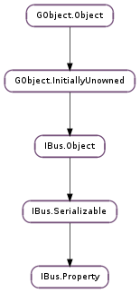

| static | new(key, type, label, icon, tooltip, sensitive, visible, state, prop_list) |
| get_icon() | |
| get_key() | |
| get_label() | |
| get_prop_type() | |
| get_sensitive() | |
| get_state() | |
| get_sub_props() | |
| get_symbol() | |
| get_tooltip() | |
| get_visible() | |
| set_icon(icon) | |
| set_label(label) | |
| set_sensitive(sensitive) | |
| set_state(state) | |
| set_sub_props(prop_list) | |
| set_symbol(symbol) | |
| set_tooltip(tooltip) | |
| set_visible(visible) | |
| update(prop_update) |
| Name | Type | Flags | Description |
|---|---|---|---|
| icon | str | r/w | The icon of property |
| key | str | r/w/c | The key of property |
| label | IBus.Text | r/w | The label of property |
| prop-type | IBus.PropType | r/w/c | The type of property |
| sensitive | bool | r/w | The sensitive of property |
| state | IBus.PropState | r/w | The state of property |
| sub-props | IBus.PropList | r/w | The sub properties of property |
| symbol | IBus.Text | r/w | The symbol of property |
| tooltip | IBus.Text | r/w | The tooltip of property |
| visible | bool | r/w | The visible of property |
None
| Name | Type | Access |
|---|---|---|
| parent | IBus.Serializable | r |
Bases: IBus.Serializable
An IBus.Property is an UI component like a button or a menu item which shows the status of corresponding input method engine property. End user can operate and see the current status of IME through these components. For example, ibus-chewing users change the English/Chinese input mode by pressing ctrl-space or click on the Eng/Chi switch button. And the IBus.Property shows the change correspondingly.
see_also: IBus.PropList, IBus.Engine
| Parameters: |
|
|---|---|
| Returns: | A newly allocated IBus.Property. |
| Return type: |
New a IBus.Property.
| Returns: | the icon of IBus.Property. Should not be freed. |
|---|---|
| Return type: | str |
Get the icon of IBus.Property.
| Returns: | the key of IBus.Property. Should not be freed. |
|---|---|
| Return type: | str |
Get the key of IBus.Property.
| Returns: | the label of IBus.Property. Should not be freed. |
|---|---|
| Return type: | IBus.Text |
Get the label of IBus.Property.
| Return type: | IBus.PropType |
|---|
| Returns: | the sensitive of IBus.Property. |
|---|---|
| Return type: | bool |
Get the sensitive of IBus.Property.
| Returns: | the state of IBus.Property. |
|---|---|
| Return type: | IBus.PropState |
Get the state of IBus.Property.
| Returns: | the IBus.PropList of IBus.Property. Should not be freed. |
|---|---|
| Return type: | IBus.PropList |
Get the IBus.PropList of IBus.Property.
| Returns: | the symbol of IBus.Property. Should not be freed. |
|---|---|
| Return type: | IBus.Text |
Get the symbol of IBus.Property.
| Returns: | the tooltip of IBus.Property. Should not be freed. |
|---|---|
| Return type: | IBus.Text |
Get the tooltip of IBus.Property.
| Returns: | the visible of IBus.Property. |
|---|---|
| Return type: | bool |
Get the visible of IBus.Property.
| Parameters: | icon (str) – Icon shown in UI. It could be a full path of an icon file or an icon name. |
|---|
Set the icon of IBus.Property.
| Parameters: | label (IBus.Text) – Text shown in UI. |
|---|
Set the label of IBus.Property.
| Parameters: | sensitive (bool) – Whether the IBus.Property is sensitive. |
|---|
Set whether the IBus.Property is sensitive.
| Parameters: | state (IBus.PropState) – The state of the IBus.Property. |
|---|
Set the state of the IBus.Property.
| Parameters: | prop_list (IBus.PropList) – IBus.PropList that contains sub IBusProperties. |
|---|
Set the sub IBusProperties.
| Parameters: | symbol (IBus.Text) – Text shown in UI. |
|---|
Set the symbol of IBus.Property.
| Parameters: | tooltip (IBus.Text) – Text of the tooltip. |
|---|
Set the tooltip of IBus.Property.
| Parameters: | visible (bool) – Whether the IBus.Property is visible. |
|---|
Set whether the IBus.Property is visible.
| Parameters: | prop_update (IBus.Property) – IBus.PropList that contains sub IBusProperties. |
|---|---|
| Returns: | True for update suceeded; False otherwise. |
| Return type: | bool |
Update the content of an IBus.Property. IBus.Property prop_update can either be sub-property of prop, or holds new values for prop.